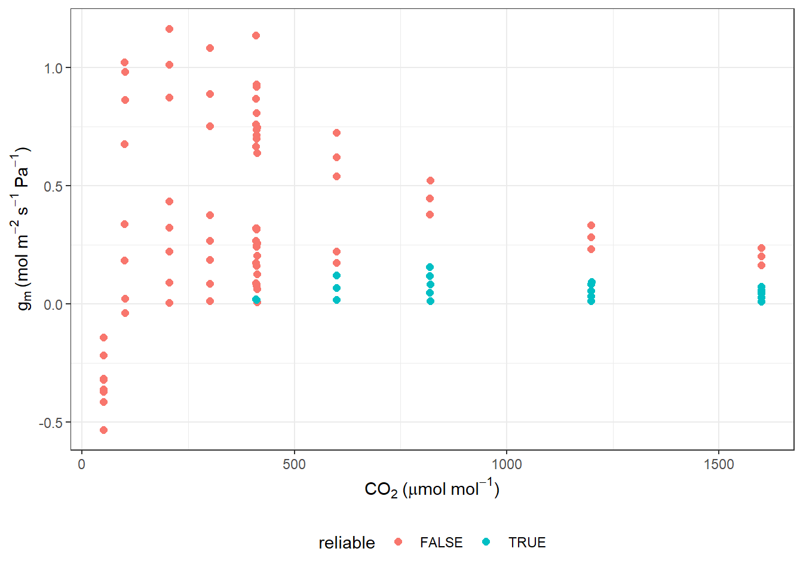
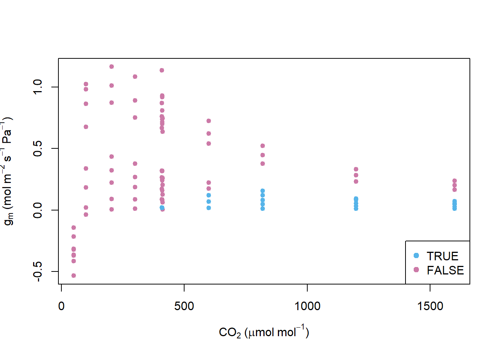
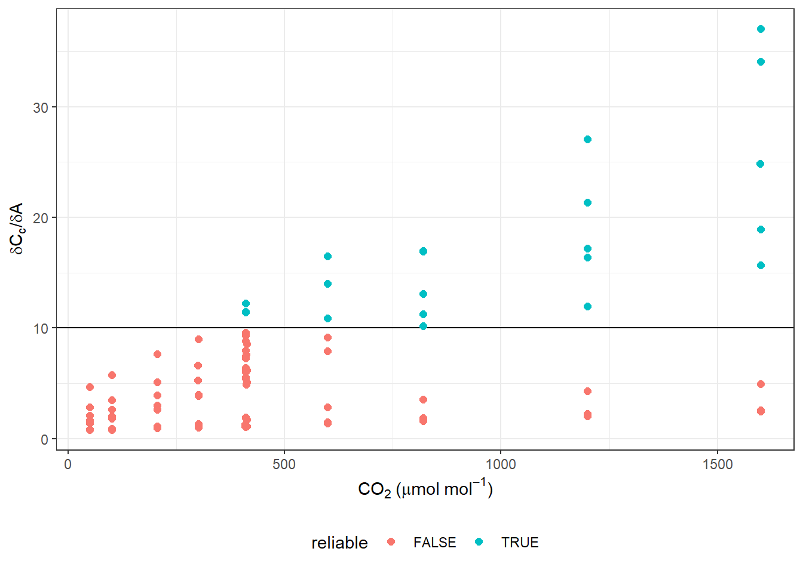
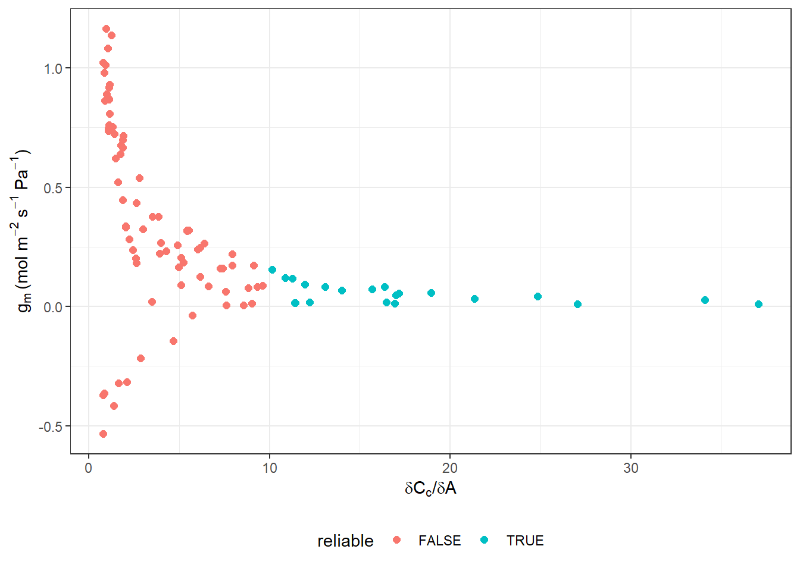

Code
fit_g_mc_variableJ(
data,
varnames = list(A_net = "A_net", J_etr = "J_etr", C_i = "C_i", PPFD = "PPFD",
phi_PSII = "phi_PSII"),
usealpha_Q = FALSE,
alpha_Q = 0.84,
beta_Q = 0.5,
gamma_star,
R_d,
P = 100
)photosynthesis` 使用了 Harley et al. (1992) 的可变电子流的方式计算 gm，其文章中对该部分理论进行了详细介绍，在正式开始演示前，我觉得还是有必要简单复述一下其中内容，以便我们理解需要测量的参数以及这个函数的操作。
从大气中 CO2 扩散到叶绿体中分压的下降与每个步骤的导度成反比：
A=(C_a - C_i) \cdot g_s/P = (C_i - C_c) \cdot g_m/P \qquad(22.1)
这里 P 指的是大气压。这个关于气体扩散的定理自然是后面计算所需的基石。之所以使用分压，是因为气体扩散经过叶肉细胞时，叶肉细胞内是液相空间，而根据 Henry’s law:
P \propto C (or) P = k_H \cdot C \qquad(22.2)
也就是描述气体溶于水的量，与其分压成正比。
而对于 FvCB 模型，我们一般都认为 RuBP 的羧化受到下面三个因子的限制：
当 Rubisco 限制阶段，光合作用的描述是：
A = \frac{V_{cmax} \cdot C_c}{C_c + K_c \cdot (1+O/K_O)} \cdot \bigg(1-\frac{\Gamma^*}{C_c} \bigg) - R_d \qquad(22.3)
根据 Henry’s law 替换 Cc：
A = \frac{V_{cmax} \cdot (C_i - A/g_m)}{C_c + K_c \cdot (1+O/K_O)} \cdot \bigg(1-\frac{\Gamma^*}{C_i - A/g_m)} \bigg) - R_d \qquad(22.4)
当处于 RuBP 限制阶段时：
A = J \cdot \frac{(C_i - A/g_m) - \Gamma^*}{4 \cdot ((C_i - A/g_m) +2\Gamma^*)} - R_d \qquad(22.5)
而电子传递速率可以通过辐射的光量子密度来计算：
J = \frac{0.24 \quad PPFD}{(1+0.24^2 \cdot PPFD^2 / J_{max})^{0.5}} \qquad(22.6)
而 RuBP 限制阶段的公式也可以用写为电子传递速率的形式：
J = (A+R_d) \cdot\frac{4 \cdot ((C_i - A/g_m) + 2 \Gamma^*)}{(C_i - A/g_m)-\Gamma^*} \qquad(22.7)
观察上面的公式我们可以看到，这个公式的适用性很广。而计算叶肉导度的方法，不管是可变电子流还是恒定电子流，都与其密切相关。
恒定电子流的假设是 J 不随 CO2 的分压而改变。因而，需要一个荧光二氧化碳响应曲线来确定 J 不随 CO2 而变化的范围。一个共识是认为当 PPFD 和其他淬灭参数不变时， J 是恒定的，如果光强小于饱和的 PPFD，很容易得到更广范围的 CO2 分压下 J 是否恒定。该方法尽管存在限制，但是他的优势是可以基于多个气体交换的测量进行计算，从而降低单个测量的误差。
对于可变电子流，只是认为 J 是变化的，但是 J 可以通过叶绿素荧光测量直接获得。
g_m = \frac{A}{C_i - \frac{\Gamma^*[J+ 8 \cdot(A+ R_d)]}{J - 4 \cdot (A + R_d)}} \qquad(22.8)
该方法测量相比来说比较简单。
恒定电子流可以在一系列大的 CO2 跨度下使用，但是要解决 CO2 对 gm 影响的问题，则需要可变电子流的方式。但是可变电子流中参数 Rd，\Gamma^* 存在不确定性，而对 J 的计算错误则导致整个计算错误。因而作者确定了一个通过 Cc 对 (A+Rd) 斜率的阈值进行判定的计算叶肉导度是否合理的方法。因为：
C_c = \Gamma^*[J+8\cdot(A+R_d)]/[J-4 \cdot(A+R_d)] \qquad(22.9)
那么：
dC_c/dA = 12 \cdot \Gamma^* \cdot J/[J - 4 \cdot(A+R_d)]^2 \qquad(22.10)
最终确认的有限的计算数据必须满足 10 < dC_c/dA < 50。这是 fit_g_mc_variable 所采用的合理的叶肉导度相关列所必须满足的条件。
fit_g_mc_variableJ(
data,
varnames = list(A_net = "A_net", J_etr = "J_etr", C_i = "C_i", PPFD = "PPFD",
phi_PSII = "phi_PSII"),
usealpha_Q = FALSE,
alpha_Q = 0.84,
beta_Q = 0.5,
gamma_star,
R_d,
P = 100
)函数本身参数都比较简单。函数有一个计算数据可靠性的检测，并只使用它检测有效的数据进行拟合进行取平均值，而且他计算的单位是按分压计算的：m^{-2} \cdot s^{-1} \cdot Pa^{-1}。
我使用软件包自带的数据进行演示，当然了 LI-6400 也是可以的，但请参考开始的连接中的文章，来进行相应处理，首先是加载软件包，我们顺便看一下数据：
library(photosynthesis)
gm_data <- read.csv("data/A_Ci_Q_data_1.csv")然后进行拟合就可以了：
data <- fit_g_mc_variableJ(
gm_data,
varnames = list(
A_net = "A",
J_etr = "ETR",
C_i = "Ci",
PPFD = "Qin",
phi_PSII = "PhiPS2"
),
gamma_star = 46,
R_d = 0.153,
usealpha_Q = TRUE,
alpha_Q = 0.84,
beta_Q = 0.5,
P = 84
)我们可以看一下 data 前的数据，仅显示 gsw 和 g_mc(计算的叶肉导度)：
| gsw | g_mc |
|---|---|
| 0.3458193 | 1.1366292 |
| 0.3409737 | 1.0829398 |
| 0.3460976 | 1.1646861 |
| 0.3666962 | 1.0234578 |
| 0.3977929 | -0.5338358 |
| 0.4284309 | 0.8689417 |
可以看到，是有很多不合理值的，我们可以作图看一下合理的值：
ggplot(data, aes(x = CO2_s, y = g_mc, colour = reliable)) +
labs(x = expression(CO[2]~"("*mu*mol~mol^{-1}*")"),
y = expression(g[m]~"(mol"~m^{-2}~s^{-1}~Pa^{-1}*")")) +
geom_point(size = 2) +
theme_bw() +
theme(legend.position = 'bottom')
当然上面的作图来自于 vignette，如果与我一样还没赶上潮流，可以使用 base plot：
col_sep <- ifelse(data$reliable == TRUE, "#56B4E9", "#CC79A7")
with(data, {
plot(CO2_s, g_mc, col = col_sep,
xlab = expression(CO[2]~"("*mu*mol~mol^{-1}*")"),
ylab = expression(g[m]~"(mol"~m^{-2}~s^{-1}~Pa^{-1}*")"),
pch =19, cex = 0.8)
legend('bottomright', legend = c('TRUE','FALSE'), pch = 19, col = c("#56B4E9", "#CC79A7"))
})
查看前文所讲的斜率判定相关数据：
#Plot QAQC graph according to Harley et al. 1992
ggplot(data, aes(x = CO2_s, y = dCcdA, colour = reliable)) +
labs(x = expression(CO[2]~"("*mu*mol~mol^{-1}*")"),
y = expression(delta*C[c]*"/"*delta*A)) +
geom_hline(yintercept = 10) +
geom_point(size = 2) +
theme_bw() +
theme(legend.position = 'bottom')
ggplot(data, aes(x = dCcdA, y = g_mc, colour = reliable)) +
labs(x = expression(delta*C[c]*'/'*delta*A),
y = expression(g[m]~'(mol'~m^{-2}~s^{-1}~Pa^{-1}*')')) +
geom_point(size = 2) +
theme_bw() +
theme(legend.position = 'bottom')
这里数据都已经包含在拟合数据里，想怎么作图可以随意定制。